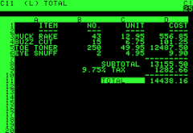
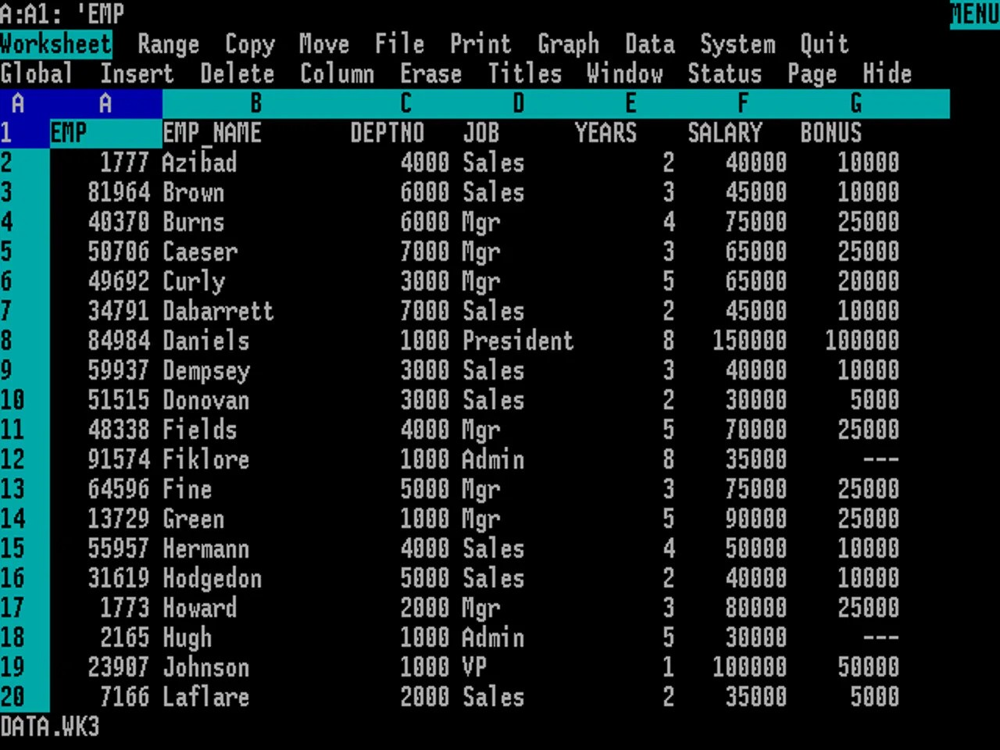
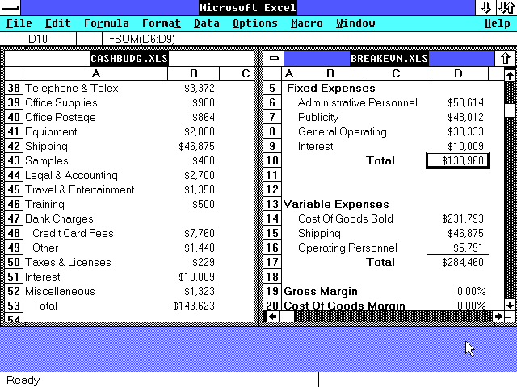
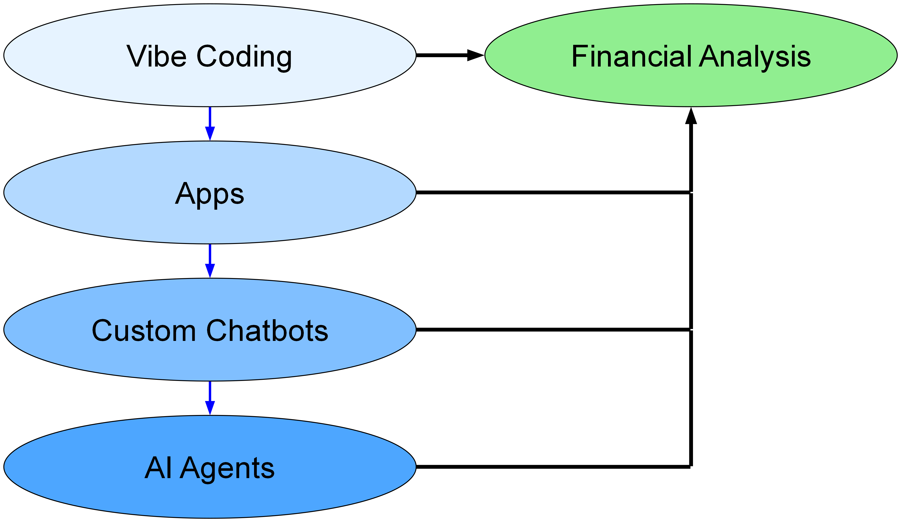
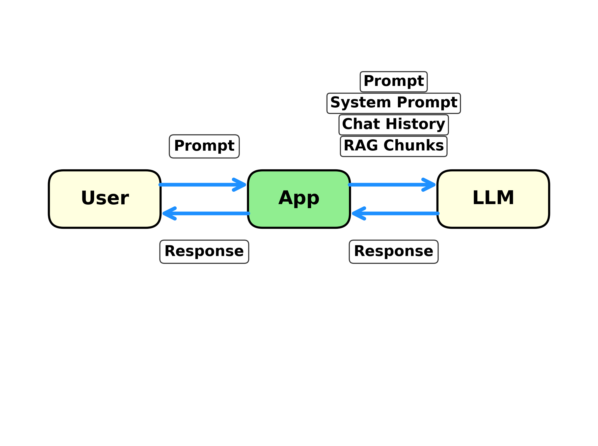
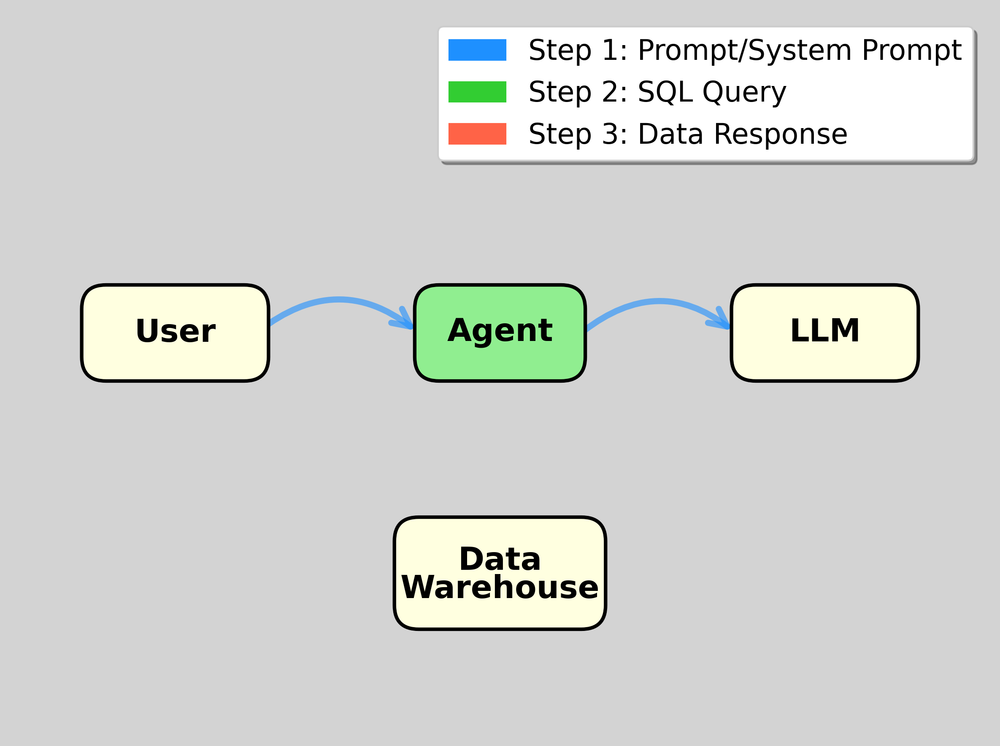
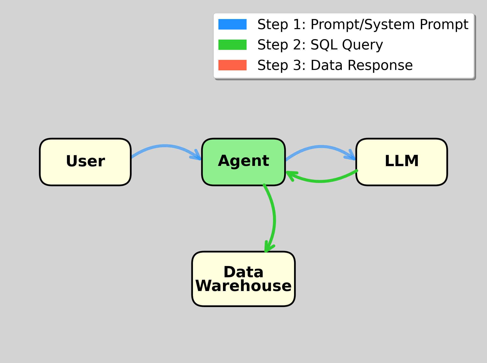
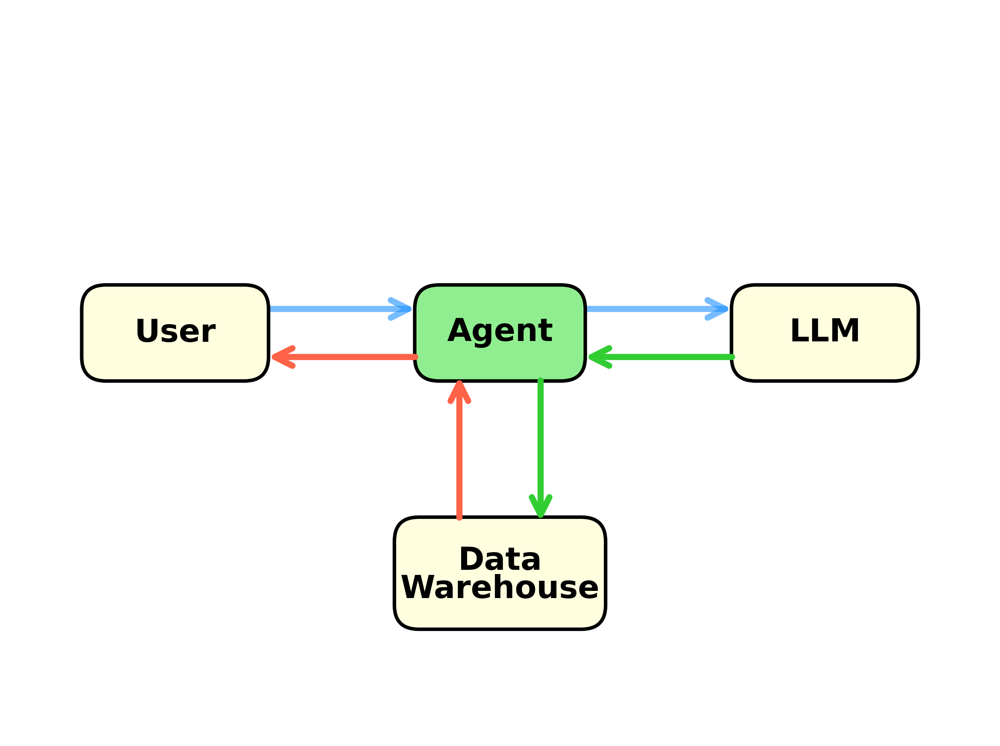

[In 2023, JPMorgan] gave employees access to OpenA’s models through LLM Suite; it was essentially a corporate ChatGPT tool used to draft emails and summarize documents.
About 250,000 JPMorgan employees have access to the platform today … Half of them use it roughly every day.
JPMorgan is now early in the next phase of its AI blueprint: It has begun deploying agentic AI to handle complex multistep tasks for employees, according to an internal road map provided by the bank.
Derek Waldron, Chief Analytics Officer:
(What we’re working towards is that) every employee will have their own personalized AI assistant; every process is powered by AI agents, and every client experience has an AI concierge.
You’ll still have people at the top who are managing and have relationships with clients, but many, many of the processes underneath are now being done by AI systems.
Workers would shift from being creators of reports or software updates, or “makers” … to “checkers” or managers of AI agents doing that work.
Only 5% of AI pilots reach production.
Workers from over 90% of the companies we surveyed reported regular use of personal AI tools for work tasks. In fact, almost every single person used an LLM in some form for their work.

VisiCalc introduced for the Apple II in 1979

Lotus-123 introduced for the IBM PC in 1983

Microsoft Excel introduced for Windows in 1987
1. A course on AI for finance
2. Previous disruptive technologies
3. Updating existing courses for AI
4. Deep dive into Claude Code
Ethan Mollick, Wharton, “Good Enough Prompting:”
Treat AI like an infinitely patient new coworker … As it is a coworker, you want to work with it, not just give it orders, and you also want to learn what it is good or bad at … Working with AI is a dialogue, not an order.
In March 2025, Y Combinator CEO Garry Tan and managing partner Jared Friedman stated that
for roughly a quarter of the startups in their Winter 2025 cohort, 95% of the codebase was written by AI.
We’ve been developing capabilities powered by Claude since 2023 within AIA Labs.
Claude powered the first versions of our Investment Analyst Assistant, which streamlined our analysts’ workflow by generating Python code, creating data visualizations, and iterating through complex financial analysis tasks with the precision of a junior analyst.
Claude prompt: Create an Excel file illustrating two-stage DCF valuation.
Read the uploaded case. Ignore the valuation method described in the case. Do a two-stage DCF valuation. Project Sales, Assets (based on asset turnover projection), Depreciation (based on depreciation to assets), Cap Ex (based on asset and depreciation projections), Net Working Capital (based on net working capital to sales),EBITDA (based on EBITDA margin), Taxes, NOPAT, and Free Cash Flow. Create a PowerPoint deck and fully functioning and nicely formatted Excel workbook. Document your assumptions and your reasons for them. Put years in columns and items in rows throughout the Excel workbook and PowerPoint deck.
Currently requires Claude Max subscription.

A system prompt is text that is sent to the LLM along with each user prompt.
It contains information and instructions for the LLM.
From Anthropic:
Through data providers, Claude has real-time access to comprehensive financial information:
Fortune, 9-14-2025:
PromptQL, an enterprise AI platform created by San Francisco-based developer tooling company Hasura, is doling out $900-per-hour wages to its engineers tasked with building and deploying AI agents to analyze internal company data using large language models (LLMs).
Tanmai Gopal, PromptQL’s cofounder and CEO, said “MBA types … are very strategic thinkers, and they’re smart people, but they don’t have an intuition for what AI can do.”


May require chatting at this stage to clarify user’s request


On Windows: Open PowerShell, install Claude Code, type claude to run.
Create a streamlit app that takes a user prompt and sends it to OpenAI GPT 4.1 using my OPENAI_API_KEY stored in C:\users\kerry\Dropbox\.ENV. In the system prompt, tell GPT to respond in Spanish. Run the app.
Print the code in app.py to the screen and explain it.
Use my NGROK_TOKEN in C:\users\kerry\Dropbox\.ENV to tunnel the app.
Requires ChatGPT Plus subscription
1. A course on AI
2. Previous disruptive technologies
3. Updating existing courses for AI
4. Deep dive into Claude Code
Teaching how to do finance in spreadsheets is a main goal.
✓ AI is used in business
✓ AI is useful for teaching/tutoring
✗ AI can automatically do many things we were teaching before
AI is more like calculators than spreadsheets. We worry that students won’t learn skills that they need.
Like primary schools and arithmetic, we will need to have practice and assessments in which AI is not allowed.
1. A course on AI
2. Previous disruptive technologies
3. Updating existing courses for AI
4. Deep dive into Claude Code
Teach about implementation in Excel \(\rightarrow\) students build Excel models.
Teach about implementation in AI \(\rightarrow\) students have chats or build apps
As AI models begin to handle underwriting, compliance, and asset allocation, the traditional architecture of financial work is undergoing a fundamental shift.
As job descriptions evolve, so does the definition of financial talent. Excel is no longer a differentiator. Python is fast becoming the new Excel.
But technical skills alone will not cut it. The most in demand profiles today are those that speak both AI and finance.
Ask your chatbot to teach you about … Be sure to tell it to ask you questions to ensure you are understanding.
But this is probably unnecessary for most topics. The LLMs are much, much more reliable than they were a couple of years ago when everyone was concerned about hallucinations.
1. A course on AI
2. Previous disruptive technologies
3. Updating existing courses for AI
4. Deep dive into Claude Code
Requires Claude Pro subscription.
VSCode with Python and Claude Code extensions:
Create a Jupyter notebook for mean-variance optimization. Prompt the user for the number of assets, their means, standard deviations, and correlations and risk-free rate. Only ask for the minimum number of correlations required to compute the correlation matrix. Assume short sales are allowed. Compute and display the tangency portfolio.
Using the Rice data portal, get adjusted closing prices for AAPL since Jan 1, 2010. Filter to keep only the last price in each month. Divide each price by the price 11 months prior, subtract 1, and then lag by one month. This is t-12 through t-2 momentum. Plot it.